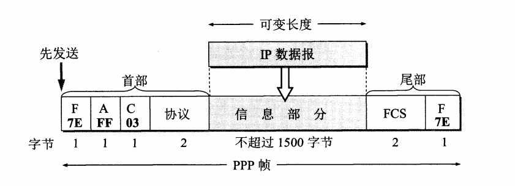
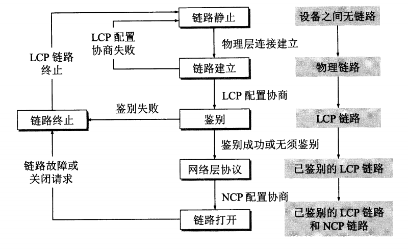
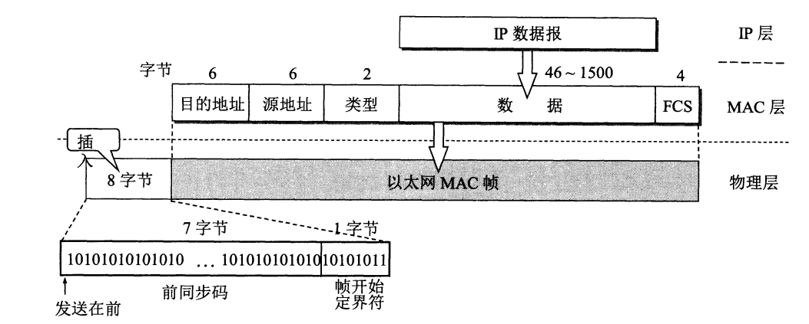

数据链路层研究的是分组怎样从一台主机传送到另一台主机，但并不经过路由器转发。从整个互联网来看，局域网仍属于数据链路层的范围。数据传送单位是帧。
数据链路层使用的信道主要有点对点信道和广播信道两种类型。在点对点信道中主要使用点对点协议（PPP），在广播信道中主要使用带有冲突检测的载波侦听多路存取协议（CSMA/CD 协议）。
#三个基本问题
- 封装成帧
- 透明传输
- 差错检测
#点对点信道
#PPP 协议应满足的要求
-
简单
对数据链路层的帧不需要纠错，不需要序号，也不需要流量控制（这些在 TCP 协议中实现）。接收方每收到一个帧，就进行循环冗余检验（CRC），如果检验正确，就收下这个帧；反之，就丢弃这个帧。
-
封装成帧
在 IP 数据报的前后分别添加首部和尾部构成一个帧。使用特殊的字符作为帧定界符。
-
透明性
如果数据中出现了和帧定界符一样的比特组合时，采用有效的措施来解决这个问题。
-
支持多种链路
-
差错控制
-
检测连接状态
-
最大传送单元（MTU）
最大传送单元是帧可以载荷的数据部分的最大长度，不是整个帧的总长度。
-
网络层地址协商
-
数据压缩协商
#PPP 协议的组成
- 一个将 IP 数据报封装到串行链路的方法。
- 一个用来建立、配置和测试数据链路的链路控制协议 LCP（Link Control Protocol）。
- 一套网络控制协议 NCP（Network Control Protocol）。
#PPP 协议的帧格式

首部和尾部的 F 字段表示帧的开始和结束。字段 A 和 C 没有含义。协议字段表示了 PPP 帧的数据部分是 IP 数据报还是链路控制协议 LCP 的数据。帧检验序列 FCS 是使用 CRC 的冗余码。
#透明传输
为了实现透明传输，对可能在信息部分出现的和帧定界符相同的比特组合进行特殊的处理。
-
当 PPP 使用异步传输时，使用字节填充的方法。
定义一个转义字符，当信息字段出现和标志字段一样的比特组合时，将其转换为带转义字符的 2 字节序列。如果出现和转义字符一样的比特组合，同样定义了一个 2 字节序列代表它。
-
当 PPP 使用同步传输时，使用零比特填充的方法。
零比特填充的具体做法是：在发送端，先扫描整个信息字段（通常用硬件实现，但也可用软件实现，只是会慢些）。只要发现有 5 个连续 1，则立即填入一个 0。因此经过这种零比特填充后的数据，就可以保证在信息字段中不会出现 6 个连续 1。接收端在收到一个帧时，先找到标志字段
F以确定一个帧的边界，接着再用硬件对其中的比特流进行扫描。每当发现 5 个连续 1 时，就把这 5 个连续 1 后的一个 0 删除，以还原成原来的信息比特流。这样就保证了透明传输：在所传送的数据比特流中可以传送任意组合的比特流，而不会引起对帧边界的错误判断。
#PPP 协议的工作状态

LCP 的配置选项包括链路上的最大帧长、使用的鉴别协议、以及不使用 PPP 帧中的地址和控制字段（没有含义的两个字节，所有帧中都一样，所以可以省略）。
PPP 链路的两端的网络层可以运行不同的网络层协议，在“网络层协议”状态，NCP 根据网络层的不同协议互相交换网络层特定的网络控制分组。
PPP 协议不是纯粹的数据链路层的协议，还包含了物理层和网络层的内容。
#广播信道
为了通信的简便，以太网采用了两种措施：
- 采用较为灵活的无连接的工作方式，即不必先建立连接就可以直接发送数据。适配器对发送的数据帧不进行编号，也不要求对方发回确认。因此，以太网提供的服务是尽最大努力的交付，即不可靠的交付。当目的站收到有差错的数据帧时，就把帧丢弃，其他什么也不做。对有差错帧是否需要重传则由高层来决定。例如，如果高层使用 TCP 协议，那么 TCP 就会发现丢失了一些数据。于是经过一定的时间后，TCP 就把这些数据重新传递给以太网进行重传。但以太网并不知道这是重传帧，而是当成新的数据帧来发送。
- 以太网发送的数据都使用曼彻斯特编码的信号。
#CSMA/CD 协议
不管在发送前，还是在发送中，每个站都必须不停的检测信道。在发送前检测信道，是为了获得发送权。如果检测出已经有其他站在发送，则自己就暂时不许发送数据，必须要等到信道变为空闲时才能发送。在发送中检测信道，是为了及时发现有没有其他站的发送和本站发送的碰撞。这就称为碰撞检测，即边发送边监听。
因为传播时延的存在，即使一个站在发送数据之前已经监听到信道“空闲”，但仍然有可能有另一个站已经在使用信道，但信号还没传播到该站的情况。因此，每一个站点在自己发送数据之后的一小段时间内，存在着遭遇碰撞的可能性。
把总线上的端到端的传播时延记为 $\tau$，那么一个站最多经过 $2\tau$ 就可以知道所发送的数据帧是否发生了碰撞。将以太网 $2\tau$ 端到端往返时间称为争用期或者碰撞窗口，如果一个站经过争用期时间还没有发生碰撞，那么这次的发送肯定不会再发生碰撞。
当发生碰撞后，双方都要停止发送，并使用截断二进制指数退避算法确定重传时机。这种算法让发生碰撞的站在停止发送数据后，不是等待信道变为空闲后就立即再发送数据, 而是推迟（这叫做退避）一个随机的时间。协议规定基本退避时间为争用期 $2\tau$，具体时间为 51.2 $\mu s$，对于 10 Mbit/s 以太网，争用期可发送 512 bit，也可以说争用期为 512 比特时间。从集合 $[0, 1, ... , (2^k - 1)]$ 中随机选择一个数记为 $r$，重传退避时间即为 $r$ 倍的争用期。其中 $k$ 为重传次数与 10 比较的较小值，当重传 16 次不成功后，丢弃该帧并向高层报告。
如果发送的一个帧特别短，那么即使中途发生了碰撞，其发送站也不会知道发生了碰撞，因此规定最短帧长必须是争用期时间内可以发送的数据长度。
当发生碰撞后，除了立即停止发送数据外，还要再继续发送 32 bit 或者 64 bit 的人为干扰信号，以便使所有用户都知道现在发生了碰撞。
以太网还规定了帧间的最小间隔为 9.6 $\mu s$，这样做是为了使刚刚收到数据帧的站的接收缓存来得及清理，做好接收下一帧的准备。
CSMA/CD 协议的要点：
-
准备发送：适配器从网络层获得一个分组，加上以太网的首部和尾部，组成以太网帧，放入适配器的缓存中。但在发送之前，必须先检测信道。
-
检测信道：若检测到信道忙，则应不停地检测，一直等待信道转为空闲。若检测到信道空闲，并在 96 比特时间内信道保持空闲（保证了帧间最小间隔)，就发送这个帧。
-
在发送过程中仍不停地检测信道，即网络适配器要边发送边监听。这里只有两种可能性：
(1) 发送成功：在争用期内一直末检测到碰撞。这个帧肯定能够发送成功。发送完毕后，其他什么也不做。然后回到 1。
(2) 发送失败：在争用期内检测到碰撞。这时立即停止发送数据，并按规定发送人为干扰信号。适配器接着就执行指数退避算法，等待 $r$ 倍 512 比特时间后，返回到步骤 2，继续检测信道。但若重传达 16 次仍不能成功，则停止重传而向上报错。
以太网每发送完一帧，一定要把已发送的帧暂时保留一下。如果在争用期内检测出发生了碰撞，那么还要在推迟一段时间后再把这个暂时保留的帧重传一次。
#以太网的 MAC 层
适配器从网络上每收到一个 MAC 帧就先用硬件检查 MAC 帧中的目的地址。如果是发往本站的帧则收下，然后再进行其他的处理。否则就将此帧丢弃，不再进行其他的处理。这样做就不浪费主机的处理机和内存资源。这里 “发往本站的帧” 包括以下三种帧：
- 单播帧（一对一)，即收到的帧的 MAC 地址与本站的硬件地址相同。
- 广播帧 (一对全体)，即发送给本局域网上所有站点的帧（全 1 地址)。
- 多播帧（一对多)，即发送给本局域网上一部分站点的帧。

类型字段表示上层使用的协议。数据字段长度范围 46 到 1500 字节，因为规定以太网最短帧长为 64 字节，减去首部和尾部的长度，数据部分最少为 46 字节。
MAC 帧中没有帧长度字段，因为以太网使用曼彻斯特编码，其一个重要特点就是：在曼彻斯特编码的每一个码元（不管码元是 1 或 0）的正中间一定有一次电压的转换（从高到低或从低到高)。当发送方把一个以太网帧发送完毕后，就不再发送其他码元了 (既不发送 1 , 也不发送 0)。因此, 发送方网络适配器的接口上的电压也就不再变化了。这样，接收方就可以很容易地找到以太网帧的结束位置。在这个位置往前数 4 字节 (FCS 字段长度是 4 字节)，就能确定数据字段的结束位置。